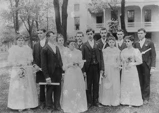

 The Indiana School for the Blind and Visually Impaired (ISBVI) educates and invests in many children that, due to blindness/low vision or blindness/low vision and additional handicapping conditions, other schools cannot or have difficulty serving. Through its outreach initiatives, ISBVI provides services to children and young adults throughout the state who are blind or have low vision who are not enrolled at the School.The Indiana School for the Blind and Visually Impaired (ISBVI) was established in 1847. The School has grown into an institution that provides educational resources that include a residential program and day school, outreach services, and consultative services to those in local agencies.
The Indiana School for the Blind & Visually Impaired is one of the largest schools for the blind and visually impaired in the country, in terms of its student population. ISBVI is frequently recognized nationally by peer schools for its best practices. ISBVI’s Superintendent has over 40 years of experience in various capacities in the field of educating children and young adults who are blind or have low vision. He served for a number of years on the Board of Directors of the Council of Schools for the Blind, of which all schools for the blind and visually impaired in the U.S. are members. As a current member of the council, he is able to participate in the sharing of innovative and best practices and the development of national standards.
Because of its strong national reputation, ISBVI is frequently able to attract highly qualified administrators and educators who add substantial value to the School. In addition, the School attracts students from other states whose parents move to Indiana specifically so their children can attend ISBVI.
In 2008, the School completed a progressive, 10-year strategic plan that outlines a set of actions designed to reorder the school and its Outreach programs in a way that makes ISBVI even more accessible to students, parents, educators, and othr professionals across Indiana. Implementation of the School's Strategic Plan has established the School as a center of excellence in the educaion of children who are blind and visually impaired.
Over the past 170 years, ISBVI has developed substantial and unique expertise regarding the education of students who are blind and visually impaired. Specifically, the School's experience in and knowledge about how to help students who are blind or have low vision master core curriculum, in the context of exposing these students to expanded core curriculum that teaches them how to navigate their physical, social, and personal worlds, is unparalleled in the state. As such, the School has at its disposal a set of unique educational assets and resources that - through the development of an appropriate institutional structure - can be accessed and used by local educators to substantially improve the education of all of Indiana's children who are blind or have low vision.
ISBVI's vision is to provide diverse and salient opportunities for students, educators, and families to access and benefit from these resources. This vision is not a new direction for the School; rather, it is a logical and strategic next step that builds upon the School's existing capacity. The capacity the School has built as an institution of learning can now be strategically directed and invested in ways that expand its ability to reach more children, their families, and the educators with whom these children work.
The School is posed to serve as a center of educational excellence and a broker of best practices research and training for educators, students, and families - which will have the effect of significantly improving the educational experiences and lives of children who are blind or have low vision. ISBVI has identified the necessary institutional structure to achieve this vision.